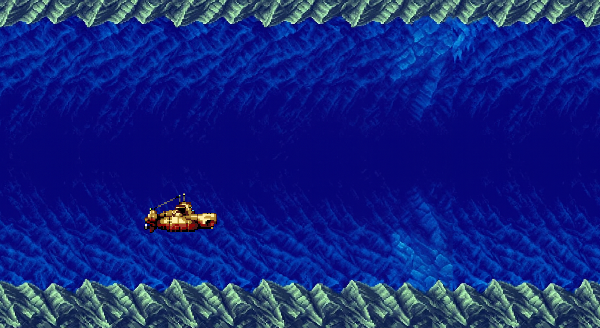
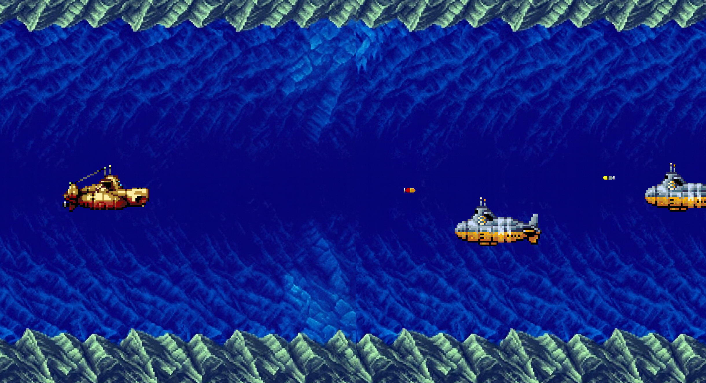

In the Hunt is een game waar je doel is om te blijven overleven,
meerdere tegenstander gaan je proberen te doden. Ontwijk of shiet ze dood voordat
ze jou dood maken.
bereik het einde en versla de eindbaas. een simpel prencipe wat toch heel moeilijk kan blijken. je gaat meerdere verschillende tegenstanders tegenkomen die je missie probeeren te verpesten,
Up arrow (↑) → Move upward
Down arrow (↓) → Move backward
Left arrow (←) → Move left
Right arrow (→) → Move right
Space button ( )→ Shoot torpedo